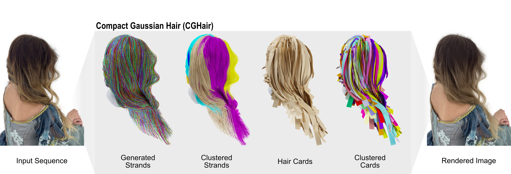
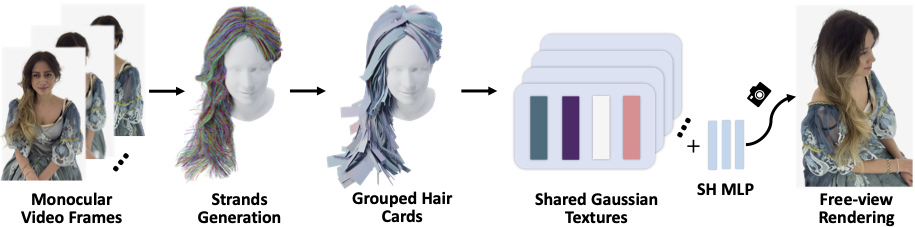

CGHair: Compact Gaussian Hair Reconstruction with Card Clustering
High-fidelity hair reconstruction with 200x less memory through hierarchical card clustering and shared Gaussian textures.
This local page snapshots materials from the original CGHair project page on April 4, 2026. The original page's paper PDF link was unavailable at capture time.
Teaser

Overview
We present a compact pipeline for high-fidelity hair reconstruction from multi-view images. While recent 3D Gaussian Splatting methods achieve realistic results, they often require millions of primitives, leading to high storage and rendering costs.
Observing that hair exhibits structural and visual similarities across a hairstyle, CGHair clusters strands into representative hair cards and groups these into shared texture codebooks. This structured representation integrates with Gaussian rendering to reduce reconstruction time and storage while maintaining comparable visual quality.
CGHair also introduces a generative-prior-accelerated method for reconstructing the initial strand geometry from images. The project reports a 4x reduction in strand reconstruction time and over 200x lower memory footprint.
Pipeline Overview
